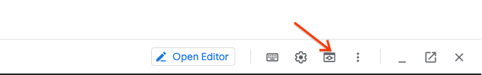

Deploy Applications on Kubernetes¶
Objective:
- Review process of creating K8s:
- Startup Probes
- Liveness Probes
- Readiness Probes
- Secrets
- ConfigMaps
Externalize Web Application Configuration
1.1 Create GKE Cluster¶
Step 1 Enable the Google Kubernetes Engine API.
gcloud services enable container.googleapis.com
Step 2 From the cloud shell, run the following command to create a cluster with two nodes:
gcloud container clusters create k8s-concepts \
--zone us-central1-c \
--num-nodes 2
Output:
NAME LOCATION MASTER_VERSION MASTER_IP MACHINE_TYPE NODE_VERSION NUM_NODES STATUS
k8s-concepts us-central1-c 1.19.9-gke.1400 34.121.222.83 e2-medium 1.19.9-gke.1400 2 RUNNING
Step 3 Authenticate to the cluster.
gcloud container clusters get-credentials k8s-concepts --zone us-central1-c
1.2 Locate Assignment 4¶
Step 1 Locate directory where Kubernetes manifests going to be stored.
cd ~/ycit019/
git pull # Pull latest assignement3
In case you don't have this folder clone it as following:
cd ~
git clone https://github.com/Cloud-Architects-Program/ycit019
cd ~/ycit019/Assignment4/
ls
Result
You can see 4 Kubernetes manifests with Assignment tasks.
Step 2 Go into your personal Google Cloud Source Repository:
MY_REPO=your_student_id-notepad
Note
Replace $student_id with your ID
cd ~/$MY_REPO
git pull # Pull latest code from you repo
Step 3 Copy Assignment 4 deploy_a4 folder to your repo:
cp -r ~/ycit019/Assignment4/deploy_a4 .
Step 4 Commit deploy folder using the following Git commands:
git status
git add .
git commit -m "adding K8s manifests for assignment 4"
Step 5 Once you've committed code to the local repository, add its contents to Cloud Source Repositories using the git push command:
git push origin master
2.1 Externalize Web Application Configuration¶
Let’s make some minor modifications to the web application to externalize its configuration, and make it easier to manage and update at deployment time.
Step 1: Move config file outside compiled application
First, let’s move the web application’s configuration into a folder outside the main compilation path
cd ~
mkdir $MY_REPO/gowebapp/config
cp $MY_REPO/gowebapp/code/config/config.json \
$MY_REPO/gowebapp/config
Remove config folder that is located in code directory
rm -rf $MY_REPO/gowebapp/code/config
Result
Your gowebapp folder should look like following:
$ ls gowebapp
code config Dockerfile
Step 2: Modify app to support setting DB password through environment variable Next, let’s make a minor modification to the Go application code to allow setting the DB password through an environment variable. This will make it easier to dynamically inject this value at deployment time.
Use a text editor of your choice (vim, VS code) to modify:
vim ~/$MY_REPO/gowebapp/code/vendor/app/shared/database/database.go
Note
To see the line number in vim you can enable them by running :set number
- Add an import for the
"os"package at line 8. After making this change, your imports list will look like the following:
import (
"encoding/json"
"fmt"
"log"
"time"
"os"
"github.com/boltdb/bolt"
_ "github.com/go-sql-driver/mysql" // MySQL driver
"github.com/jmoiron/sqlx"
"gopkg.in/mgo.v2"
)
- Add the following code at line 89 after
var err error:
// Check for MySQL Password environment variable and update configuration if present
if os.Getenv("DB_PASSWORD") != "" {
d.MySQL.Password = os.Getenv("DB_PASSWORD")
}
2.2 Build new Docker image for your frontend application¶
Step 1: Update Dockerfile for your gowebapp frontend application:
cd ~/$MY_REPO/gowebapp
FROM golang:1.16.4
LABEL maintainer "student@mcgill.ca"
LABEL gowebapp "v1"
EXPOSE 80
ENV GO111MODULE=auto
ENV GOPATH=/go
ENV PASSWORD=rootpasswd
COPY /code $GOPATH/src/gowebapp/
WORKDIR $GOPATH/src/gowebapp/
RUN go get && go install
VOLUME $GOPATH/src/gowebapp/config
ENTRYPOINT $GOPATH/bin/gowebapp
Step 2: Build updated gowebapp Docker image locally
cd ~/$MY_REPO/gowebapp
Build and push the gowebapp image to GCR. Make sure to include “.“ at the end of build command.
docker build -t gcr.io/${PROJECT_ID}/gowebapp:v3 .
docker push gcr.io/${PROJECT_ID}/gowebapp:v3
2.3 Run and test new Docker image locally¶
Before deploying to Kubernetes, let’s test the updated gowebapp Docker image locally, to ensure that the frontend and backend containers run and integrate properly.
Step 1: Launch frontend and backend containers
First, we launch the backend database container, using a previously created Docker image, as it will take a bit longer to startup, and the frontend container depends on it.
Note
Update user-name with command below with you docker-hub id
docker network create gowebapp -d bridge
docker run --net gowebapp --name gowebapp-mysql --hostname \
gowebapp-mysql -d -e MYSQL_ROOT_PASSWORD=rootpasswd gcr.io/${PROJECT_ID}/gowebapp-mysql:v1
Step 2: Now launch a frontend container using the updated gowebapp image, mapping the container port 80 - where the web application is exposed - to port 30005 on the host machine. Notice how we're mapping a host volume into the container for configuration, and setting a container environment variable with the MySQL DB password:
Note
Update user-name with command below with you docker-hub id
docker run -p 8080:80 \
-v ~/$MY_REPO/gowebapp/config:/go/src/gowebapp/config \
--net gowebapp -d --name gowebapp \
--hostname gowebapp gcr.io/${PROJECT_ID}/gowebapp:v3
Step 3 Test the application locally
Now that we've launched the application containers, let's try to test the web application locally.
You should be able to access the application at Google Cloud Web Preview Console:

Note
Web Preview using port 8080 by default. If you application using other port, you can edit this as needed.
Step 4 Create an account and login. Write something on your Notepad and save it. This will verify that the application is working and properly integrates with the backend database container.
Result
By externalizing application configuration, you have made it easier to manage and modify your application configuration at deployment time. This will be very helpful as we deploy our applications to Kubernetes
Step 5 Cleanup environment
docker rm -f $(docker ps -q)
docker network rm gowebapp
2.4 Update DockerCompose file to support changes¶
Step 1 Edit docker-compose file
cd ~/$MY_REPO/
vim docker-compose.yml
version: '2.4'
services:
gowebapp-mysql:
container_name: gowebapp-mysql
build: ./gowebapp-mysql
environment:
- MYSQL_ROOT_PASSWORD=rootpasswd
healthcheck:
test: [ "CMD", "mysqladmin" ,"ping", "-h", "localhost" ]
interval: 30s
timeout: 5s
retries: 3
networks:
- gowebapp
gowebapp:
container_name: gowebapp
build: ./gowebapp
ports:
- 8080:80
depends_on:
gowebapp-mysql:
condition: service_healthy
volumes:
- ./gowebapp/config:/go/src/gowebapp/config
networks:
- gowebapp
networks:
gowebapp1:
driver: bridge
Step 3 Test application
export CLOUDSDK_PYTHON=/usr/bin/python
docker-compose up -d
Step 4 Test the application locally
Now that we've launched the application containers, let's try to test the web application locally.
You should be able to access the application at Google Cloud Web Preview Console:
Note
Web Preview using port 8080 by default. If you application using other port, you can edit this as needed.
Step 5 Tear down environment
docker-compose down
3.1 Create a Namespace dev¶
Step 1 Create 'dev' namespace that's going to be used to develop and deploy Notestaker application on Kubernetes using kubetl CLI.
kubectl create ns dev
Step 3 Use dev context to create K8s resources inside this namespace.
kubectl config set-context --current --namespace=dev
Step 4 Verify current context:
kubectl config view | grep namespace
Result
dev
3.2 Create a Secret¶
Step 1 Base64 Encode MySQL password rootpasswd. See Lab 8 for more details.
Step 2 Edit a secret for the MySQL password in dev namespaces.
cd ~/$MY_REPO/deploy_a4
vim secret-mysql.yaml
kind: Secret
apiVersion: v1
metadata:
name: mysql
type: Opaque
data:
password: cm9vdHBhc3N3ZA==
kubectl apply -f secret-mysql.yaml
kubectl describe secret mysql
Step 2 Update gowebapp-mysql-deployment.yaml under
~/$MY_REPO/deploy_a4
vim ~/$MY_REPO/deploy_a4/gowebapp-mysql-deployment.yaml
apiVersion: extensions/v1beta1
kind: Deployment
metadata:
name: gowebapp-mysql
labels:
run: gowebapp-mysql
spec:
replicas: 1
strategy:
type: Recreate
template:
metadata:
labels:
run: gowebapp-mysql
spec:
containers:
- env:
- name: MYSQL_ROOT_PASSWORD
valueFrom:
secretKeyRef:
name: mysql
key: password
image: gcr.io/${PROJECT_ID}/gowebapp-mysql:v1
name: gowebapp-mysql
ports:
- containerPort: 3306
livenessProbe:
tcpSocket:
port: 3306
initialDelaySeconds: 30
timeoutSeconds: 2
readinessProbe:
tcpSocket:
port: 3306
initialDelaySeconds: 25
timeoutSeconds: 2
Step 2 Start the rolling upgrade and record the command used in the rollout history:
kubectl apply -f gowebapp-mysql-deployment.yaml --record
Step 3 Verify that rollout was successful
kubectl rollout status deploy gowebapp-mysql
Step 4 Check if pods are running
kubectl get pods
Step 5 Create a Service object for MySQL
kubectl apply -f gowebapp-mysql-service.yaml --record
Step 6 Check to make sure it worked
kubectl get service -l "run=gowebapp-mysql"
3.3 Create ConfigMap and Probes for gowebapp¶
Step 1: Create ConfigMap for gowebapp's config.json file
cd ~/$MY_REPO/gowebapp/config/
kubectl create configmap gowebapp --from-file=webapp-config-json=config.json
kubectl describe configmap gowebapp
Note
The entire file contents from config.json are stored under the key webapp-config-json
3.4 Deploy webapp by Referencing Secret, ConfigMap and define Probes¶
Step 1: Update gowebapp-deployment.yaml under ~/$MY_REPO/deploy_a4/
cd ~/$MY_REPO/deploy_a4/
vim gowebapp-deployment.yaml
In this exercise, we will add liveness/readiness probes to our deployments. For more information, see here: https://kubernetes.io/docs/tasks/configure-pod-container/configure-liveness-readiness-probes/
apiVersion: apps/v1
kind: Deployment
metadata:
name: gowebapp
labels:
run: gowebapp
spec:
replicas: 2
selector:
matchLabels:
run: gowebapp
template:
metadata:
labels:
run: gowebapp
spec:
containers:
- env:
- name: DB_PASSWORD
valueFrom:
secretKeyRef:
name: mysql
key: password
image: gcr.io/${PROJECT_ID}/gowebapp-mysql:v1
name: gowebapp
ports:
- containerPort: 80
livenessProbe:
httpGet:
path: /register
port: 80
initialDelaySeconds: 15
timeoutSeconds: 5
readinessProbe:
httpGet:
path: /register
port: 80
initialDelaySeconds: 25
timeoutSeconds: 5
volumeMounts:
- name: config-volume
mountPath: /go/src/gowebapp/config
volumes:
- name: config-volume
configMap:
name: gowebapp
items:
- key: webapp-config-json
path: config.json
kubectl apply -f gowebapp-deployment.yaml --record
Result
This will start the rolling upgrade and record the command used in the rollout history
Step 3: Verify that rollout was successful
kubectl rollout status deploy gowebapp
Step 4: Get rollout history
kubectl rollout history deploy gowebapp
Step 5: Get rollout history details for specific revision (use number show in output to previous command)
kubectl rollout history deploy gowebapp --revision=<latest_version_number
Step 6 Check if pods are running
kubectl get pods
Step 7 Create a Service object for gowebapp
kubectl apply -f gowebapp-service.yaml --record
Step 8 Access your application on Public IP via automatically created Loadbalancer
created for gowebapp service.
To get the value of Loadbalancer run following command:
kubectl get svc gowebapp -o wide
Expected output:
NAME TYPE CLUSTER-IP EXTERNAL-IP PORT(S) AGE
gowebapp Loadbalancer 10.107.15.39 XXXXXX 9000:32634/TCP 30m
gowebapp-mysql ClusterIP None <none> 3306/TCP 1h
Step Access Loadbalancer IP via browser:
Result
Congrats!!! You've deployed you code to Kubernetes
3.5 Commit K8s manifests to repository and share it with Instructor/Teacher¶
Step 1 Commit deploy folder using the following Git commands:
git add .
git commit -m "k8s manifests for Hands-on Assignment 4"
Step 2 Push commit to the Cloud Source Repositories:
git push origin master
3.6 Cleaning Up¶
Step 1 Delete the cluster
gcloud container clusters delete k8s-concepts